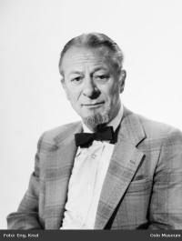

Lovise og Håkon sin slekt og familie
Lovise f. Eggan og Håkon Wahl
Personside 860
Thorleiv Sellæg
M, #21476, f. 19 april 1920, d. 28 januar 1986
Foreldre
| Far | Johan Bernhard Sellæg (f. 19 desember 1880, d. 10 desember 1950) |
| Mor | Aagot Thoresen (f. 9 februar 1893, d. 1 april 1969) |
Familie: Gerd Støren Fredriksen (f. 24 august 1916, d. 18 august 1996)
| Sønn | Johan Sellæg (f. 5 september 1949) |
{kind=link}

Thorleiv Sellæg
Biografi
Thorleiv Sellæg ble født den 19 april 1920. Han giftet seg med Gerd Støren Fredriksen. Han døde den 28 januar 1986. Han ble gravlagt den 20 mars 1986 på/i Bragernes kirkegård, Drammen, Buskerud.
Thorleiv Sellæg had reference number 4353. Han var utdannet ved ved bygningslinjen på/i Trondheim Tekniske Skole. 
| Sist redigert | 20 august 2024 20:45:37 |
| Slektskap | 6-menning 2 ganger forskjøvet til Håkon Wahl |
Gerd Støren Fredriksen
K, #21477, f. 24 august 1916, d. 18 august 1996
Foreldre
| Far | Emil Fredriksen (f. før 1898) |
| Mor | Esther Skramstad (f. før 1898, d. august 1965) |
Familie: Thorleiv Sellæg (f. 19 april 1920, d. 28 januar 1986)
| Sønn | Johan Sellæg (f. 5 september 1949) |
Biografi
Gerd Støren Fredriksen ble født den 24 august 1916 på/i Drammen, Buskerud. Hun giftet seg med Thorleiv Sellæg. Hun døde den 18 august 1996 på/i Drammen, Buskerud. Hun ble gravlagt den 29 august 1996 på/i Bragernes kirkegård, Drammen, Buskerud.
Gerd Støren Fredriksen was also known as Gerd Støren Sellæg. Hun had reference number 4354.
| Sist redigert | 9 oktober 2013 00:00:00 |
Borghild Marie Martinsdatter Aune
K, #21479, f. 28 september 1886, d. 7 april 1959
Foreldre
| Far | Martin Joensen Aune (f. 10 mars 1845, d. 2 juli 1932) |
| Mor | Maren Ottesdatter Kvatningen (f. 9 mai 1846, d. 23 juli 1922) |
Familie: Andreas Mathiassen Sellæg (f. 7 mars 1883, d. 28 november 1963)
| Datter | Marie Andreasdatter Sellæg+ (f. 8 november 1914, d. 2 november 1993) |
| Datter | Gunvor Andreasdatter Sellæg+ (f. 8 februar 1916, d. 23 august 1986) |
| Datter | Eli Oddrun Andreasdatter Sellæg+ (f. 17 desember 1919, d. 18 juli 1997) |
Biografi
Borghild Marie Martinsdatter Aune ble født den 28 september 1886 på/i Overhalla, Nord-Trøndelag. Hun giftet seg med Andreas Mathiassen Sellæg i 1914. Hun døde den 7 april 1959 på/i Overhalla, Nord-Trøndelag. Hun ble gravlagt den 14 april 1959 på/i Skage kirkegård, Overhalla, Nord-Trøndelag.
Borghild Marie Martinsdatter Aune was also known as Borghild Marie Sellæg. Hun had reference number 4358.
| Sist redigert | 9 oktober 2013 00:00:00 |
| Slektskap | 6-menning 3 ganger forskjøvet til Håkon Wahl |
Marie Andreasdatter Sellæg
K, #21480, f. 8 november 1914, d. 2 november 1993
Foreldre
| Far | Andreas Mathiassen Sellæg (f. 7 mars 1883, d. 28 november 1963) |
| Mor | Borghild Marie Martinsdatter Aune (f. 28 september 1886, d. 7 april 1959) |
Familie: Ragnar Kristian Brattberg (f. 19 juli 1913, d. 18 april 2004)
| Sønn | Andreas Sellæg Brattberg+ (f. 30 mars 1946, d. 8 august 2025) |
| Sønn | Rolf Johannes Brattberg (f. 27 april 1948) |
| Datter | Borghild Brattberg+ (f. 4 mars 1952) |
| Sønn | Gunnar Brattberg+ (f. 8 september 1953) |
Biografi
Marie Andreasdatter Sellæg ble født den 8 november 1914 på/i Hunn vestre 13/1, Hunn, Overhalla, Nord-Trøndelag. Hun giftet seg med Ragnar Kristian Brattberg den 3 november 1945. Hun døde den 2 november 1993. Hun ble gravlagt den 8 november 1993 på/i Skage kirkegård, Overhalla, Nord-Trøndelag.
Marie Andreasdatter Sellæg was also known as Marie Brattberg. Hun had reference number 4361. Hun var utdannet på/i Gudbrandsdal Folkehøyskole. Hun var utdannet på/i Namdal Husmorskole i Namsos.
| Sist redigert | 25 september 2022 00:37:29 |
| Slektskap | 6-menning 2 ganger forskjøvet til Håkon Wahl |
Gunvor Andreasdatter Sellæg
K, #21481, f. 8 februar 1916, d. 23 august 1986
Foreldre
| Far | Andreas Mathiassen Sellæg (f. 7 mars 1883, d. 28 november 1963) |
| Mor | Borghild Marie Martinsdatter Aune (f. 28 september 1886, d. 7 april 1959) |
Familie: Magne Vannebo (f. 10 april 1915, d. 22 mai 1978)
| Datter | Bjørg Vannebo+ (f. 13 juli 1944) |
| Sønn | Olav Vannebo+ (f. 12 februar 1946) |
| Sønn | Geir Vannebo+ (f. 30 oktober 1948) |
| Datter | Astrid Vannebo (f. 26 oktober 1951) |
Biografi
Gunvor Andreasdatter Sellæg ble født den 8 februar 1916 på/i Hunn vestre 13/1, Hunn, Overhalla, Nord-Trøndelag. Hun giftet seg med Magne Vannebo i 1943. Hun døde den 23 august 1986. Hun ble gravlagt på/i Grua kirkegård, Lunner, Oppland.
Gunvor Andreasdatter Sellæg was also known as Gunvor Vannebo. Hun had reference number 4362. Hun var utdannet på/i Statens Lærerskole i Husstell, Stabekk, Bærum.
| Sist redigert | 19 september 2022 15:23:52 |
| Slektskap | 6-menning 2 ganger forskjøvet til Håkon Wahl |
Eli Oddrun Andreasdatter Sellæg
K, #21482, f. 17 desember 1919, d. 18 juli 1997
Foreldre
| Far | Andreas Mathiassen Sellæg (f. 7 mars 1883, d. 28 november 1963) |
| Mor | Borghild Marie Martinsdatter Aune (f. 28 september 1886, d. 7 april 1959) |
Familie: Gunnar Groven (f. 25 mars 1920, d. 15 juli 2004)
| Datter | Berit Groven+ (f. 31 august 1948) |
| Sønn | Inge Andreas Groven (f. 21 oktober 1951, d. 31 oktober 1952) |
| Sønn | Arne Robert Groven (f. 18 april 1958) |
Biografi
Eli Oddrun Andreasdatter Sellæg ble født den 17 desember 1919 på/i Hunn vestre 13/1, Hunn, Overhalla, Nord-Trøndelag. Hun giftet seg med Gunnar Groven den 18 august 1945. Hun døde den 18 juli 1997 på/i Steinkjer, Nord-Trøndelag. Hun ble gravlagt den 23 juli 1997 på/i Skage kirkegård, Overhalla, Nord-Trøndelag.
Eli Oddrun Andreasdatter Sellæg was also known as Eli Oddrun Groven. Hun had reference number 4363. Hun var utdannet på/i Levanger læreskole.
| Sist redigert | 26 september 2022 00:28:43 |
| Slektskap | 6-menning 2 ganger forskjøvet til Håkon Wahl |
Ragnar Kristian Brattberg
M, #21483, f. 19 juli 1913, d. 18 april 2004
Foreldre
| Far | Rudolf Edgard Brattberg (f. 7 august 1886, d. 13 desember 1975) |
| Mor | Gyda Josefa Johansdatter Skilleås (f. 11 desember 1887, d. 31 oktober 1969) |
Familie: Marie Andreasdatter Sellæg (f. 8 november 1914, d. 2 november 1993)
| Sønn | Andreas Sellæg Brattberg+ (f. 30 mars 1946, d. 8 august 2025) |
| Sønn | Rolf Johannes Brattberg (f. 27 april 1948) |
| Datter | Borghild Brattberg+ (f. 4 mars 1952) |
| Sønn | Gunnar Brattberg+ (f. 8 september 1953) |
Biografi
Ragnar Kristian Brattberg ble født den 19 juli 1913 på/i Overhalla, Nord-Trøndelag. Han giftet seg med Marie Andreasdatter Sellæg den 3 november 1945. Han døde den 18 april 2004. Han ble gravlagt den 23 april 2004 på/i Skage kirkegård, Overhalla, Nord-Trøndelag.
Ragnar Kristian Brattberg had reference number 4364. Han var utdannet på/i Mære landbruksskole, Steinkjer. Han kjøpte i 1952 Hunn vestre 13/1, Hunn, Overhalla, Nord-Trøndelag. Han bodde i 1975 på/i Hunn vestre 13/1, Hunn, Overhalla, Nord-Trøndelag.
| Sist redigert | 26 september 2022 14:37:32 |
Andreas Sellæg Brattberg
M, #21484, f. 30 mars 1946, d. 8 august 2025
Foreldre
| Far | Ragnar Kristian Brattberg (f. 19 juli 1913, d. 18 april 2004) |
| Mor | Marie Andreasdatter Sellæg (f. 8 november 1914, d. 2 november 1993) |
Familie: Unni Kolstad (f. 3 oktober 1949)
| Datter | Mari Brattberg (f. 28 mars 1976) |
Biografi
Andreas Sellæg Brattberg ble født den 30 mars 1946 på/i Overhalla, Nord-Trøndelag. Han giftet seg med Unni Kolstad i 1974. Han døde den 8 august 2025. Han ble gravlagt den 14 august 2025 på/i Skage kirkegård, Overhalla, Nord-Trøndelag.
Andreas Sellæg Brattberg had reference number 4367. Han ble konfirmert i 1961 på/i Skage kirke, Overhalla, Nord-Trøndelag. Han var utdannet på/i Mære Landbruksskole, Steinkjer, Nord-Trøndelag. Han var utdannet på/i Skjetlein Landbruksskole, Trondheim. Han bodde i 1975 på/i Hunn vestre 13/1, Hunn, Overhalla, Nord-Trøndelag.
| Sist redigert | 12 august 2025 16:45:22 |
| Slektskap | 7-menning 1 gang forskjøvet til Håkon Wahl |
Magne Vannebo
M, #21494, f. 10 april 1915, d. 22 mai 1978
Foreldre
| Far | Olav Ingvard Vannebo (f. 11 januar 1874, d. 23 januar 1966) |
| Mor | Ellen Anna Guldvik (f. 15 august 1874, d. 1 september 1972) |
Familie: Gunvor Andreasdatter Sellæg (f. 8 februar 1916, d. 23 august 1986)
| Datter | Bjørg Vannebo+ (f. 13 juli 1944) |
| Sønn | Olav Vannebo+ (f. 12 februar 1946) |
| Sønn | Geir Vannebo+ (f. 30 oktober 1948) |
| Datter | Astrid Vannebo (f. 26 oktober 1951) |
Biografi
Magne Vannebo ble født den 10 april 1915 på/i Overhalla, Nord-Trøndelag. Han giftet seg med Gunvor Andreasdatter Sellæg i 1943. Han døde den 22 mai 1978 på/i Harestua, Lunner, Oppland. Han ble gravlagt på/i Grua kirkegård, Lunner, Oppland.
Magne Vannebo had reference number 4379.
| Sist redigert | 9 oktober 2013 00:00:00 |